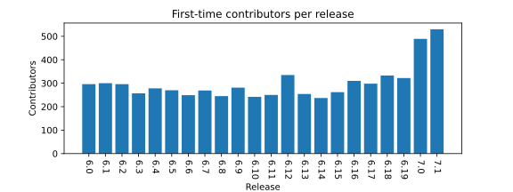

Development statistics for the 7.1 kernel
This release saw the merging of 15,849 non-merge changesets from 2,479 developers. That makes 7.1 one of the busiest development cycles in the kernel's history; only four other releases brought in more commits. The 6.7 release remains the busiest ever, with 17,284 commits; the size of that release was driven by the ill-fated addition of the bcachefs filesystem and all of its development history. The 5.8, 5.10, and 5.13 also brought in more commits than 7.1, though by much smaller margins.
The number of developers working on 7.1 does set a new record, beating the short-lived record of 2,362 set by 7.0. The trend here merits some attention, but we'll start with the usual numbers. The most prolific developers working on 7.1 were:
Most active 7.1 developers
By changesets Johan Hovold 181 1.1% Thomas Weißschuh 175 1.1% Eric Biggers 168 1.1% Stefan Metzmacher 155 1.0% Krzysztof Kozlowski 148 0.9% Rafael J. Wysocki 147 0.9% Russell King 130 0.8% Tejun Heo 125 0.8% Christoph Hellwig 122 0.8% Eric Dumazet 120 0.8% Jakub Kicinski 119 0.8% Sean Christopherson 113 0.7% Thorsten Blum 101 0.6% Thomas Zimmermann 86 0.5% Dmitry Torokhov 85 0.5% Andy Shevchenko 84 0.5% Mauro Carvalho Chehab 84 0.5% Chuck Lever 79 0.5% Bartosz Golaszewski 77 0.5% Lorenzo Stoakes 77 0.5%
By changed lines Jakub Kicinski 126367 12.7% Roman Li 105777 10.7% Namjae Jeon 54445 5.5% Andrew Lunn 16180 1.6% Eric Biggers 14471 1.5% Stefan Metzmacher 14403 1.5% Taniya Das 11956 1.2% Alexei Starovoitov 11410 1.2% Andy Shevchenko 7673 0.8% Mauro Carvalho Chehab 7637 0.8% Christian Brauner 7483 0.8% Pankaj Patil 7181 0.7% Christoph Hellwig 6368 0.6% Krzysztof Kozlowski 5993 0.6% Besar Wicaksono 5873 0.6% Dmitry Baryshkov 5787 0.6% Tejun Heo 5698 0.6% Derek J. Clark 5288 0.5% Vincent Donnefort 5033 0.5% Ratheesh Kannoth 4992 0.5%
As an experiment, in this article, links marked [KSDB] point into the subscriber-only LWN Kernel Source Database, where more information can be found.
In the lines-changed column, Jakub Kicinski [KSDB] removed a large chunk of old and unmaintained networking code, including the ISDN, Bluetooth CMTP, and ATM subsystems. Roman Li [KSDB] added yet another big set of amdgpu header files. Namjae Jeon [KSDB] has brought back the older NTFS filesystem implementation and added a lot of new features to it. Andrew Lunn [KSDB] removed a set of unmaintained networking drivers.
Nearly 8% of the commits in 7.1 carried Tested-by tags, while almost 51% had Reviewed-by tags. Both of those numbers are relatively low compared to recent releases. The top testers and reviewers this time were:
Test and review credits in 7.1
Tested-by Daniel Wheeler 89 5.8% Fuad Tabba 61 3.9% Gavin Shan 40 2.6% Shaopeng Tan 40 2.6% Mohd Ayaan Anwar 40 2.6% Jesse Chick 40 2.6% Mostafa Saleh 36 2.3% Punit Agrawal 34 2.2% Jon Hunter 33 2.1% Zeng Heng 31 2.0% Lad Prabhakar 29 1.9% Peter Newman 28 1.8% Eric Biggers 27 1.7% Venkat Rao Bagalkote 22 1.4% Randy Dunlap 21 1.4%
Reviewed-by Konrad Dybcio 334 3.1% Dmitry Baryshkov 300 2.8% Andy Shevchenko 197 1.9% Krzysztof Kozlowski 181 1.7% Christian König 170 1.6% Ilpo Järvinen 161 1.5% Simon Horman 140 1.3% Frank Li 134 1.3% Geert Uytterhoeven 122 1.1% Christoph Hellwig 119 1.1% Jonathan Cameron 118 1.1% Gary Guo 114 1.1% Andrea Righi 103 1.0% Rob Herring 100 0.9% Lorenzo Stoakes 94 0.9%
Daniel Wheeler [KSDB] maintains his perpetual position as the kernel's top credited tester. On the review side, Konrad Dybcio [KSDB] added his tag to 334 changes while Dmitry Baryshkov [KSDB] tagged 300; both performed reviews almost exclusively for Qualcomm drivers and devicetree files, mostly written by their Qualcomm colleagues.
Development for the 7.1 release was supported by 230 employers that we were able to identify; the most active of those were:
Most active 7.1 employers
By changesets (Unknown) 2160 13.6% Intel 1435 9.1% 1227 7.7% AMD 828 5.2% Qualcomm 787 5.0% Red Hat 745 4.7% (None) 694 4.4% NVIDIA 595 3.8% Meta 535 3.4% (Consultant) 500 3.2% SUSE 459 2.9% Oracle 390 2.5% Arm 334 2.1% Renesas Electronics 289 1.8% NXP Semiconductors 254 1.6% IBM 215 1.4% Huawei Technologies 210 1.3% Kylin 181 1.1% Linutronix 171 1.1% SerNet 155 1.0%
By lines changed Meta 156583 15.8% AMD 136736 13.8% (Unknown) 76738 7.7% Qualcomm 75847 7.6% Samsung 55391 5.6% 54537 5.5% Intel 48917 4.9% NVIDIA 37374 3.8% Red Hat 35706 3.6% (None) 35178 3.5% Oracle 15837 1.6% SerNet 14403 1.5% Arm 13030 1.3% SUSE 12208 1.2% NXP Semiconductors 11777 1.2% Huawei Technologies 11580 1.2% Realtek 10314 1.0% (Consultant) 9984 1.0% Marvell 8282 0.8% Amutable 7483 0.8%
As usual, there is little change here from previous development cycles.
The developers keep coming
There is one thing that is clearly changing, though. The 7.0 development-statistics article noted that the number of first-time kernel contributors has been growing. The 7.1 cycle continued that trend with 530 new contributors [KSDB], far more than the previous record of 489 set by 7.0. The numbers now look like this:

This trend, which shows no signs of stopping, is almost certainly driven by the increasing availability of LLM-based development tools; it has made itself felt in a number of ways. There are 299 commits in 7.1 that include an Assisted-by tag indicating the use of such a tool. The number of actual commits created with LLM involvement must be significantly higher, though; a number of developers are clearly not complying with the kernel's rules for disclosing that use.
These new developers are showing up in surprising places. The serial-line IP (SLIP) protocol implementation, for example, has seen almost no attention outside of maintenance changes for years, but it is now seeing fixes like this one from Weiming Shi [KSDB], a developer who first showed up in 6.19. The long-unloved floppy driver received this fix (since reverted) from 6.17 first-timer Guangshuo Li [KSDB]. The OMFS filesystem received its first non-mechanical change in many years from first-timer HyungJung Joo [KSDB].
The most prolific 7.1 first-timer, Michael Bommarito [KSDB] with 60 commits, contributed fixes to the SMB filesystem, the SCTP network protocol, the Bluetooth subsystem, io_uring, the SCSI subsystem, the amdgpu driver, the RDMA RoCEv2 implementation, and beyond. Almost all of those patches carried Assisted-by tags. There are few kernel developers who could make substantial changes across that much of the kernel; the ability of a previously unseen developer to do that is something new. Whether any developer, new or old, can fully understand substantive patches to that range of kernel subsystems is a different question.
Then, there is the seemingly infinite stream of typo fixes that has turned into an outright flood in recent times. As the documentation maintainer, I welcome these changes as a way for a new developer to become familiar with the development process, but I also try to encourage developers to move on to more substantial changes — advice that is taken less often than I would like.
Of course, access to an LLM is not the only reason a developer might enter our community. A minimum of 132 of the first-time developers seen in this development cycle can already be associated with an employer. Qualcomm leads the pack with 15 first-time developers; AMD employed 14, and Google 12. In total, 51 companies employed first-time 7.1 developers.
One of the many motivations behind bringing Rust into the kernel was the hope of attracting younger developers into the community. A total of five of the new developers (just under 1%) touched Rust files (those whose names end in ".rs"). Three of those developers contributed single, small patches, one added a number of tracepoints to the binder driver, and one (Eliot Courtney [KSDB]) contributed 23 commits, 19 of which were to the in-progress "nova" driver for NVIDIA GPUs. So Rust may be bringing in developers, but not yet in huge numbers yet.
Overall, the areas most frequently touched by new developers were:
Subsystem # developers Documentation 78 net 66 other drivers 52 drivers/net 49 drivers/staging 47 sound 46 include 36 drivers/gpu/drm 35 other fs 33 tools 32 arch/arm64 26 kernel 25 fs/smb 19 drivers/usb 17 drivers/iio 15 drivers/hwmon 13 drivers/bluetooth 10 MAINTAINERS 10 drivers/platform 10 drivers/i2c 9 mm 8
There are some interesting patterns here. The crowd of new developers working on the documentation is nice on its face .... but see "typo fixes", above. The number of first-timers changing the MAINTAINERS file could be of concern; there has been an episode or two recently where an unknown developer tried to claim maintainership of a subsystem, a prospect that is worrisome for obvious reasons. In this case, roughly half of the MAINTAINERS changes accompanied new drivers submitted by the new developer in question. There are a couple of previously unseen developers who showed up and claimed the maintainership of an existing subsystem, but they used email addresses from the company involved and, at a first glance, look legitimate. Meanwhile, the staging tree was meant to be a way for new developers to enter the community; it appears to still be serving that purpose.
One number that stands out is the number of new developers contributing to the SMB filesystem. These developers are not fixing typos; instead, they are addressing what appear to be serious, perhaps security-relevant bugs. Whether these developers are running their own tools to find bugs, or whether instead there is some sort of organized effort to direct new developers at those bugs is unclear. What does seem clear is that anybody who is using SMB in a setting where security matters may want to apply extra diligence to following kernel updates for a while.
As the numbers in the first part of this article show, the kernel's
development process appears to be rolling along at its usual fast pace — or
even a bit faster. But things are changing. New development tools have
facilitated the entry of a large crowd of new developers into the
community. If enough of them stay around, it should not take long to
change the makeup of the kernel community — and how that community works —
substantially. We live in interesting times.
| Index entries for this article | |
|---|---|
| Kernel | Releases/7.1 |
Posted Jun 15, 2026 18:21 UTC (Mon)
by jpeisach (subscriber, #181966)
[Link] (7 responses)
I'm still learning Rust (thanks for reminding me to do my Rustlings) - and I know Greg KH said something about Rust being great for new devs, but as it stands:
Posted Jun 15, 2026 19:53 UTC (Mon)
by jmalcolm (subscriber, #8876)
[Link] (6 responses)
Posted Jun 15, 2026 19:55 UTC (Mon)
by jpeisach (subscriber, #181966)
[Link] (5 responses)
I'm personally hesitant against doing that, might as well do the experience to fully grasp it - after all I have the time to look at it.
Posted Jun 15, 2026 20:32 UTC (Mon)
by khim (subscriber, #9252)
[Link] (4 responses)
You can simply go and verify what LLM would tell you. Keep in mind that it's right about 90-95% of time and don't be afraid to poke holes in LLMs explanations — and it will work fine. Looking on the random code and pulling good information from it is very good use of LLMs, just keep in mind that they are not always right and final responsibility to look on what LLM finds out is yours. But even if it only find the right places to look in 90% of time it's still a big help.
Posted Jun 16, 2026 7:09 UTC (Tue)
by epa (subscriber, #39769)
[Link] (3 responses)
Posted Jun 16, 2026 15:18 UTC (Tue)
by iabervon (subscriber, #722)
[Link] (2 responses)
Posted Jun 16, 2026 16:02 UTC (Tue)
by kleptog (subscriber, #1183)
[Link]
I've had some success with pointing an LLM at a piece of code and asking it to identify the parts that are not obvious, and for those parts to describe what it thinks it does and to suggest a comment. It does a pretty good job of identifying unusual stuff and the explanations are ok, but just as often they're bugs. As a bonus, once you fix the comments it suggested, then it's more readable for humans and LLMs alike.
It also works to ask it to review your README.md for suggestions for improvements. It's also done wonders for my error path handling, since it auto-suggests useful error messages including all the relevant details. Good error messages are important but sometimes they're a distraction while you're coding.
Coding LLMs have seen every common programming pattern under the sun, so if it's not recognising it it definitely needs a comment.
Posted Jun 19, 2026 20:14 UTC (Fri)
by mathstuf (subscriber, #69389)
[Link]
Posted Jun 15, 2026 20:55 UTC (Mon)
by rosalie (subscriber, #164575)
[Link]
The kernel code isn't that difficult to read, which I was surprised by, but there's next to no documentation on how to use certain functions so I mainly looked at how other HID drivers do things and tried to mimick that, which I'm sure is intentional.
Posted Jun 15, 2026 21:57 UTC (Mon)
by mjbommar (subscriber, #184543)
[Link] (1 responses)
For the record, I submitted a patch on 2.6.19 back in December 2006 when the 802.11 softmac stack was young and still broken on my laptop. I think that means I'm technically not a first timer, if anyone is really counting.
That said, your broader point remains. I think we all appreciate the difference between "understanding" something and the ability to recite the call graph with your eyes closed after three beers.
The gap between those two things is real and I don't think most people - myself especially in this context - should pretend to understand the code they submit in the latter sense. That's reserved for the select few whose shoulders we stand on.
But I doubt I'm ruffling too many feathers when I suggest that writing software of any complexity without formal verification (which is often impossible), especially in languages like C, especially when a code base spans many years and many authors and many styles, is practically guaranteed to induce human failure modes.
So I think the real question we ought to be asking, heavily motivated by the impact of LLM's on both the productivity function and the changing nature of offensive security, is how we can help more people like me safely contribute.
Safely can mean a lot of things. Yes, there's the Rust conversation re: memory management. But more broadly, I think it's documentation, testing, processes, and - probably most controversially - a little more convergence of standards, styles, and even, *gasp*, code.
All of these things are tools that transcend the individual maintainer. And in my opinion, much like the smartest, fastest, strongest hominids lost out to the ones who built the best tools and shared that knowledge, we are at a point where competitive dynamics will do the same to us.
P.S.: since I know some of you have asked or wondered about the why, I'll say that rolling up your sleeves and grabbing a shovel feels much better than sitting anxiously and worrying about what happens when frontier models fall into the wrong hands. I still remember when security was about Theo and Linus's latest argument; let's just say, we're not in Kansas anymore.
Posted Jun 16, 2026 1:41 UTC (Tue)
by marcH (subscriber, #57642)
[Link]
I always found debuggers to be fantastic code "explorers", including with the kernel. Nothing better to observe some call stacks "live" in their almost natural habitat. Unfortunately, debugging the kernel seems to almost always require some dark magic - whether it's some secret QEMU spell or something else, rarely practiced and even more rarely documented. Sad.
Posted Jun 16, 2026 5:25 UTC (Tue)
by hrw (subscriber, #44826)
[Link] (3 responses)
Posted Jun 16, 2026 14:34 UTC (Tue)
by Wol (subscriber, #4433)
[Link] (2 responses)
-Pedant mode on- I think you mean "first Linux kernel release in recent times". A quick Google tells me that Linux is roughly twice as old as Linaro :-)
Cheers,
Posted Jun 16, 2026 14:58 UTC (Tue)
by hrw (subscriber, #44826)
[Link] (1 responses)
Linaro was founded in 2010. I was one of first hired to work there. Before it got a name.
I assume that kernel developers moved to some member companies (like Qualcomm). But I do not plan to do research what happened.
Posted Jun 17, 2026 5:56 UTC (Wed)
by jirisl2 (guest, #184573)
[Link]
Posted Jun 16, 2026 9:35 UTC (Tue)
by mvollrath (subscriber, #183387)
[Link] (1 responses)
I have an old PC that I still use for everything, and with RAM prices being what they were (and still are), felt like I should put some effort into maintaining that old hardware. I started with the ethernet driver, since it seemed like it should be pretty straightforward, and I'm generally interested in telemetry.
I started by pointing Claude at the main source file and asking it to find bugs. It found maybe 6 hits, and one of them turned out to be a very real bug. I spent a few days reading code and documentation to convince myself that it was indeed a very real bug.
With that new understanding of the patterns, next I wanted to be sure I could hack it without the LLM. I did code review on the same driver looking for any resources allocated in the driver probe which could be leaked on probe failure, and found one.
The next step was automating away that tedious code review, so I learned enough about coccinelle to scan all of the PCI ethernet drivers for the same probe leak, and it found another in a different driver.
I feel like the assistance with that first step was the real value of the LLM. It's kind of like having an expert to ask questions about any part of the kernel anytime you want, with the usual caveats of interacting with LLM for any purpose.
I do use the Assisted-by tag when the LLM was involved in finding the bug/change, iterating on the implementation, or reviewing the work. I can understand why a lot of people don't. There's no context about what parts of the work were done by the LLM, unless you add some noise to the commit description. If I'm feeling proud of myself for finding a bug or a big optimization myself, adding that label to the commit kind of steals the thunder. That's one reason I set out to make a few commits without any LLM assistance. Now I'm over it, and I'm just gonna do what works and follow the guidelines.
Maybe the guidelines can evolve to work around the psychology. For example, if it were acceptable to credit the LLM with different tags, that might help. On some commits I would credit it with Suggested-by, on others Reviewed-by, for implementation Co-authored-by, or Assisted-by as a shorthand for any or all of these. The normalization of anthropomorphism is a little creepy, but there's a reason we don't just use Assisted-by when a real person helps with a commit. The reduction cuts both ways.
Posted Jun 16, 2026 12:59 UTC (Tue)
by csamuel (✭ supporter ✭, #2624)
[Link]
I think more precision in describing the involvement of LLMs in the development of a patch is a good suggestion, it would (I think) give both better transparency and insight into changing strengths and weaknesses as the tooling (and the community) evolves.
Posted Jun 16, 2026 19:05 UTC (Tue)
by NAR (subscriber, #1313)
[Link] (2 responses)
Posted Jun 18, 2026 13:15 UTC (Thu)
by mjbommar (subscriber, #184543)
[Link]
Posted Jun 27, 2026 11:12 UTC (Sat)
by andy_shev (subscriber, #75870)
[Link]
Rust and "new devs"
- some pieces of code dont have rust bindings/abstractions
- the kernel can be a bit of a complex codebase to learn, and learning it in *another* language where most of the code is C, makes it less useful
Rust and "new devs"
Cognitive impact
Cognitive impact
Cognitive impact
Cognitive impact
Cognitive impact
Cognitive impact
More of my patches merged
<soapbox>
<soapbox>
> ...
> So I think the real question we ought to be asking, heavily motivated by the impact of LLM's on both the productivity function and the changing nature of offensive security, is how we can help more people like me safely contribute.
> Safely can mean a lot of things. Yes, there's the Rust conversation re: memory management. But more broadly, I think it's documentation, testing, processes, and - probably most controversially - a little more convergence of standards, styles, and even, *gasp*, code.
Linaro fired devs?
Linaro fired devs?
Wol
Linaro fired devs?
Linaro fired devs?
My new developer experience with LLM
My new developer experience with LLM
No tests?
No tests?
No tests?